年末オフ
２００１／１２／３０
秋葉原駅・電気街口
０１：１０ｐ．ｍ
突然の合流だった。もともとこの日は有明のあのイベントに出向くつもりでいた。
だが先に行った人から『入場制限が遅くまでかかると思うので来るなら覚悟したほうがいいです』と入電あり。
前日でほしかったものはあらかた手にした上にこの日はそれほどなかった。
そしてオフ会が控えていて時間もなかったので結局あきらめていたと言ういきさつがある。
そこに三戸森から連絡が入った。秋葉原に付き合わんか…と。僕は応じた。
ところがそのちょうど出る際にありさんからの電話。秋葉原のある店の場所を教えてくれとのこと。駅へ向かいながら何とか教える。
そして電気街口で三戸森を待ちつつありさんに確認をしてみたら目的の店に入ることはできなかったらしい。新橋に移動して昼食をとると言うので『それならこっちもまだだから』と勝手にブッキングしてしまった。
ありさんたちはそろそろおなじみになりつつあるおくちゃん。そして一回目の愛知オフは急用で向こうが参加できず。二回目はさすがにちょくちょくは出向けずこちらが不参加で初めて顔を合わせるａｎｃｈａｎさんだった。
例によってａｎｃｈａｎさんに『名刺』を渡したら（ちなみにサイト移転して初めてなので新しいバージョン）受けていた。
実はクウガファンらしい。これが後ほど…
肉料理を食べつつ歓談。今回で三度目のおくちゃんだが初対面ではほとんど後姿だけ。二度目は緊張の面持ち。
三度目は…
新橋駅・銀座口
０２：３１ｐ．ｍ
新橋での開催は八月以来。九月は葛西臨海公園＆新宿。１０月は池袋。１１月は上野だし。
原点回帰…と言うわけでもなさそう。二次会の店の所在地ゆえか。とにかく銀座口は凄いことになっていた。
メールの時点では一次会の頭からは確か１９人。僕は有明を断念したがさらにもっと後から来るはずのｍｉｎｏｌｄさん（この人は有明ではないと思うが）。四封さん。さらにはいないはずのｙｏｕｋｉさんも（何かの都合で時間が空いたのでこちらに来たとのこと）
整理してみよう。一次会参加者は幹事の井上さん。その友人細田さん。ｙｏｕｋｉさん。女神さまっの贈り物さん、僕・茂木忠。
三戸森。ｍｉｎｏｌｄさん。りょういちさん、ｗ_ｔｏｍさん、ソーマさん（ｗ_ｔｏｍさんのご友人）、ありさん、ａｎｃｈａｎさん。ＪｏｅＺさん、異国の植木さん、コーチさん、。四封さん。みぃてっくさん。嶋崎 建昭さん（みぃてっくさんのご友人）。
遅れてくる
カラオケ館新橋東口店
０２：４５ｐ．ｍ
今回僕が用意したネタは５つあった。もっともすべて行けるなんては考えてなかった。あくまで候補というか。大半は後からの組。特にゼロさんやＮｏｒＮｅＮくんを待ちたかった。だからしょっぱなからは出なかったが。
こう言うときにいつも先陣を切るのはいちぎょうさんだが今回はなぜか完全に不参加。
代わりにトップを切ったのは
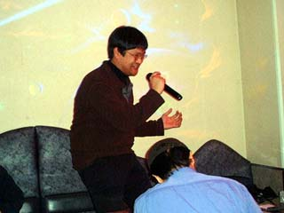
←ズゴゴゴーン ズガガカーン→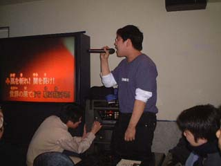
まさしく暴風雨のように駆け巡る。
オダギリジョーばりのナイスな笑顔。ソーマさん→
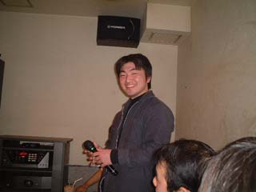
ここのところ洋楽ばかりの細田さん。選曲は『Ｙｏｕ ｇｉｖｅ ａ ＢＡＤ ＮＡＭＥ』。
で…カラオケではｍｉｎｏｌｄさんは久しぶり。『洋楽を歌う細田さん』とははじめてかも。きちっと伴奏までしてくれる。さすが。
しかし洋楽が強いのはわかるがアニソンでも何でも曲がかかってすぐにきちっと合わせられるなんてどう言う人なのだろう。
こちらもオフ会自体が久しぶりのみぃてっくさん。『風のファンタジア』ときたら友人の嶋崎さんは『僕であるために』。
せっかくだから友人同士のデュエットくらい聞いてみたかった気も。ところで嶋崎さんも『おむすびーず』なのだろうか？
関東初参加のａｎｃｈａｎさん。『光戦隊マスクマン』を熱唱。
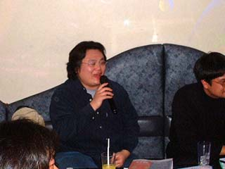
←もしや特撮はオールラウンド？
まじめに見えてネタを持ってくるあたりはさすが…→
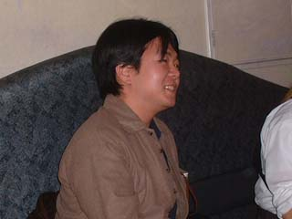
前回はやり損ねたことがある。ありさんの参加でリベンジのときは来た。すでに打ち合わせてありさんがスタートするときに自動的にコンボがかかるようになっている。
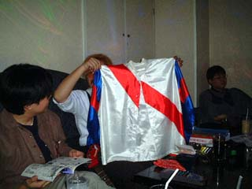
しかもどうもその歌。競馬を知る人なら大受けだったのであろう内容。つくづくおとウサさん不参加が残念である。
２２曲目。嶋崎さんで『Ｔｈｅ Ｒｅａｌ Ｆｏｌｋ Ｂｌｕｅ』。続く２３曲目はａｎｃｈａｎさんで『寒北斗』
その辺りだったと思うが未だ歌わぬ三戸森に『多少はずしても愛嬌で済むから歌ってみたら』と持ちかける。三戸森はしばし考え
井上『年末オフはじめます』
みぃてっく『公演見に来てください』
ｍｉｎｏｌｄ『ライヴも見に来てくださーい』
『昔は地元だったんだけどな』ＪｏｅＺ
ＮｏｒＮｅＮ『徹夜は寒いよぉ』
黒猫『早くメイドロボ売り出さないかな…』
贈り物『妹売り出さないかな…』
『このだめ人間ども！！』ｈｉｄｅｙｕｋｉ
コーチ『やべっ。チャットで怒らせたか』
ａｎｃｈａｎ『最初の愛知オフ行きたかったよ』
ありさん『ワインどうです。呑みますよね』
『歩こう。歩こう』四封
お客さんここね。オフ会御用達カラオケ館
お客さん物好きね
こんなに過激なのに参加者が後を絶たないのよ
ア…お客さん何するね。
参加したら大変よ
あいやぁっ。参加のメール出してしまた
オフ会は去年の夏。神保町で始まったという
喜劇的伝説あるのだよ
以来そこに参加したものみな
お笑い芸人になてしまう恐るべし会
ほら見ろ イロモノになてしまた
りょういち『あの写真上げちゃいました』
三戸森『女の子に誕生日祝ってもらったの初めてだろ』
びーたま『限界まではやんないから』
『ボゾグ…ボゾギデジャズ』茂木忠
細田『そろそろ移動しない？』
ゼロ『実弾演習のチケットあるんですか？』
蒼天『ツーショットおねがいします』
『ズゴゴゴーン ズガガガガーン』ｗ＿ｔｏｍ
江戸屋『何でここにいるの？』
異国『おかわり名古屋丼。よろしく』
退屈堂『実は結婚することに』
『それでは一本締めでお願いします』松崎
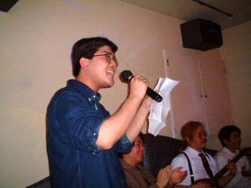
←歌がうまいのでなおさら可笑しい。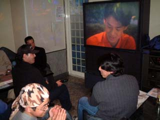
どうも年末と言うせいかみんな出し惜しみなし。ｍｉｎｏｌｄさんも『Ｗｅ’ｒｅ ａｎ Ａｍｅｒｉｃａｎｂａｎｄ』を。
スーツとギターというのもけっこうかっこ良くはまるものですなぁ。
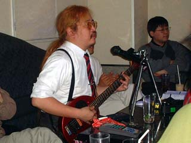
マイクスタンド代わりは三脚でしょうか？
新橋駅・銀座口
０５：５３ｐ．ｍ
二次会からの面子と合流するために移動。ここから参加なのはびーたまさん。ひね吉さん。おーくさん。松崎さん。そしてこちらもメールには名前のなかったＫ．１さんだった。ゼロさんは結局ここからになってしまった。
気がつけばたまさんの髪が若干茶色くなりしかもゆるいウェーブが。これはｍｉｎｏｌｄさんみたいにする気か（笑）
松崎さんを待つがどうしてか池袋にいたとか。用事が片付かなかったのだろうか？ ＮｏｒＮｅＮくんに関しては不明。
所在がはっきりしたので予約もあり移動開始。もともと所要のあったｙｏｕｋｉさんと帰省する四封さんはここでお別れ。
居酒屋『アルカトラズ』
０６：１０ｐ．ｍ
今回は下見に同行してないので僕も予備知識はない。だが入ってよくわかった。
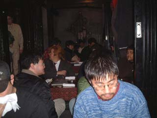
←なまじひげ面だけに妙にしっくり来るのは偏見？（笑）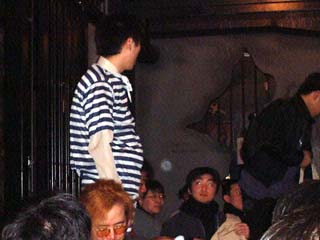
乾杯の音頭をとり乾杯する。
飲み放題コースゆえに各テーブル好き勝手に頼む。ま…とりあえずビールはお約束だが。
看守に扮した女子店員が『何の集まりなんですか？』とｈｉｄｅｙｕｋｉさんに尋ねる。以前にもあったがこの質問は説明に困る。
声優ファンであることを隠す気はないが説明してわかってもらえるかどうかが難しくて面倒くさい。
実際そこまで説明したがわかってもらえなかった。
七時過ぎくらいに最後の二人が到着。松崎さんはこちらのテーブルにつく。呑みでこれだけ近いのも珍しい（十月にやってたけど）
惨劇は繰り返される。経験者は顔をしかめている。あの
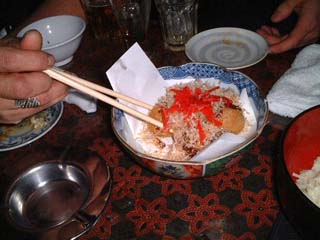
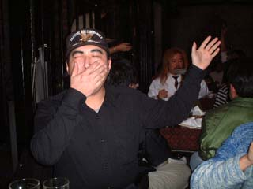
慌ててウーロン茶を飲み目の前のうどんをすするｈｉｄｅｙｕｋｉさん。テーブルには六人。たこ焼きの余りがひとつ。どうやらそれがもう一つかと思いきやＪｏｅＺさんが顔をしかめてきた。
最初『俺が当たった』という割には平然としていたからジョークかと思っていたが後から来たらしい。うーむ…強がるあたり『アギト』のパンテラス・マギストラみたいな人だ。他には蒼天さんも当たったらしい。
松崎さんと三戸森。どっちの発言だったか忘れたが『どんなものか話の種に当たってみた買った気もするな』と恐ろしいことを。
何か松崎さんのテンションが低い。仕事で疲れていたのか？
それともレポ書き二人の前でうかつなことはしゃべれないと黙っていたのか？ それにしてはのりのりだったところもあるが…
いろいろとカクテルも名前がひねってある。僕はパインジュースとリキュールを混ぜる『チャカチャカ』というカクテルを頼む。
別名『銃刀法違反』。
出てきたのはパイナップルジュースと
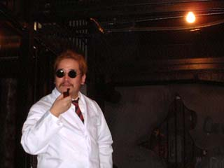
←偶然の構図ですが裸電球との位置がいい感じだと思いません？「どーもー。モノでーす」『トムでーす』→
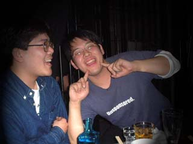
理由は知らないが寝ていなかったらしいありさんは姿が見えないと思ったら居酒屋で轟沈していた。お疲れさまです。
書くとサイト存亡にかかわるトークも繰り広げつつ（笑）時間はあっという間に過ぎる。予定の時間を過ぎたので店を出る。
会計を済ませオフ会としてはここで完了。だから締めをすることにした。
井上さんのご指名で『バスツアー山梨』を勝手に締めようとした(笑)松崎さんが音頭を取り三本締め。
これで年内のオフ会は全て終わった。解散の運びとなるが大半は新橋駅から。みんなで移動する。
新橋駅銀座口
０９：１１ｐ．ｍ
ひとつ失敗だったのはソーマさんには名刺を渡し忘れたこと。嶋崎さんはお花見で会っていたのでここでは出さなかった。
その嶋崎さんに駅へ向かう途中でたずねられた。『みんなあんな替え歌用意してくるんですか』と。
それにはみぃてっくさんが答えてくれたが代わりに聞かれた。
｢そう言えば『ゲッターロボ』は？｣ゼロさんが来たらｗ_ｔｏｍさんと三連弾の予定だったが。
実はそれでちょっとだけ物足りなさが残っていた。ありさんとａｎｃｈａｎさんは飛び込みで宿を取るつもりだったらしいのでうちに泊まることを進めた。だからそんなに遅くまでは…とは言えど歌になだれ込みそう。
結局歌になだれ込んだので参加してしまった(笑)
ここでお別れの人たちには『よいお年を』と。そしてまだ宴は続く。